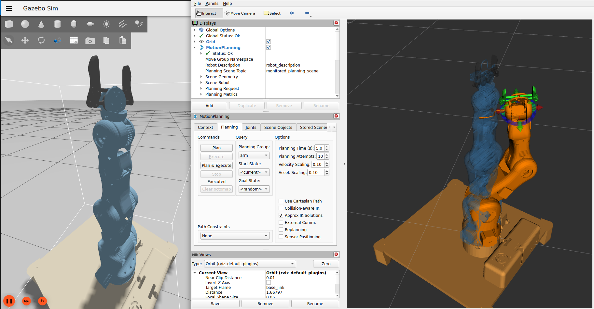

FPGA Game Simulation with Unity John Deere | Feb 2024 Key Achievements Programmed Intel FPGA (DE10-Lite) in VHDL Real-time accelerometer data integration with Unity Serial communication between FPGA and laptop FPGA VHDL Unity
DC Motor PID Control System John Deere | Aug 2024 Key Achievements Achieved <2% steady-state error 40% faster settling time through iterative tuning Arduino + motor encoder implementation PID Arduino Control Theory
Autonomous Tractor Navigation Using STM32 John Deere | Aug 2024 Show Demo Key Achievements Developed embedded system with STM32 microcontroller Integrated IMU and motor encoder data for real-time navigation Designed control algorithms for precise trajectory tracking Implemented communication protocols (CAN, UART, I2C, SPI) STM32 Embedded C RTOS Communication Protocols
5-DOF Moveo Robotic Arm with ROS2 Personal Project | Jan 2025  Show Demo ROS2 Repository Key Features URDF/Xacro Modeling: Parameterized robot description allowing joint/link customization MoveIt2 Integration: OMPL-based motion planning with collision avoidance Gazebo Simulation: Physics-based testing of trajectories before hardware deployment ROS2 Control: Hardware interface for real-time joint control Gripper Functionality: Custom controller for precision object manipulation RViz Visualization: Real-time TF frames and trajectory visualization ROS2 MoveIt2 Gazebo Motion Planning
ROS2 DC Motor Control System Manchester Robotics | Feb 2025 Show Demo Key Features Distributed ROS2 architecture Real-time PID control via ROS topics Encoder feedback implementation Simulated vs real-world analysis ROS2 micro-ROS PID Control ESP32